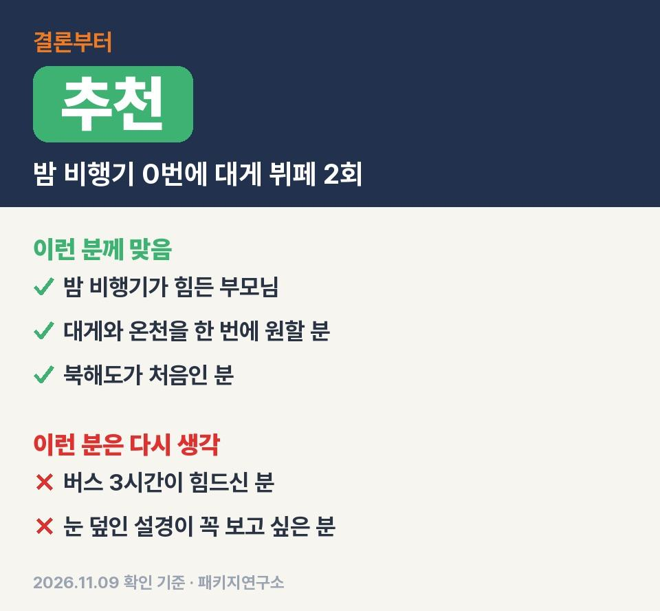
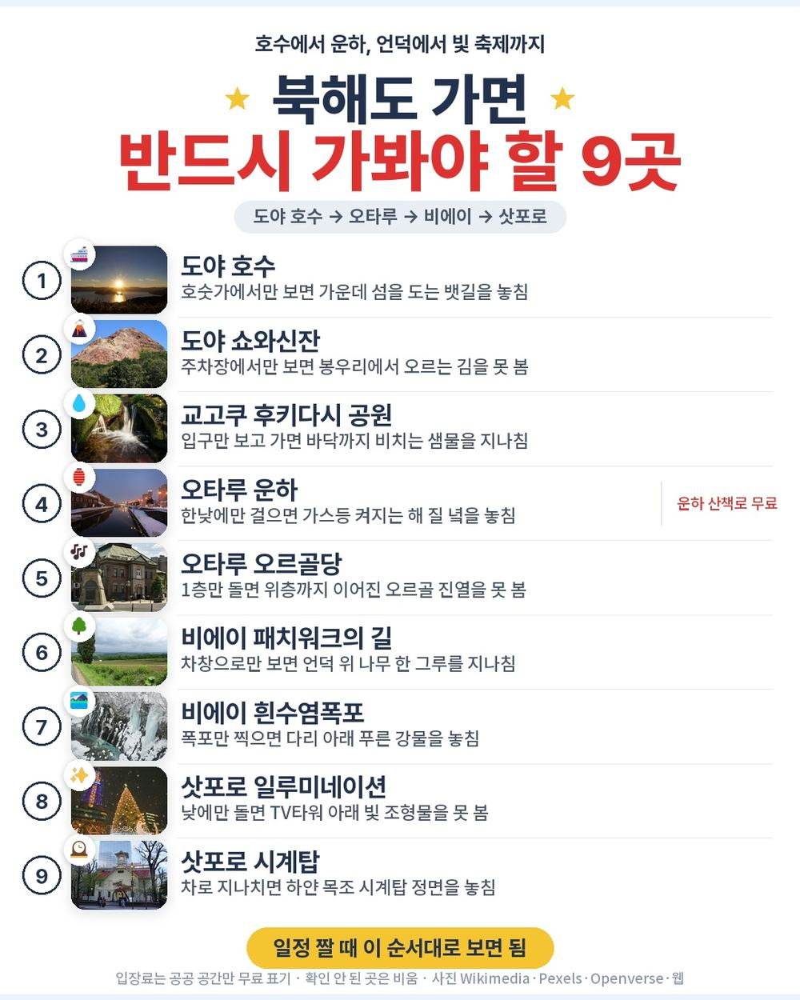
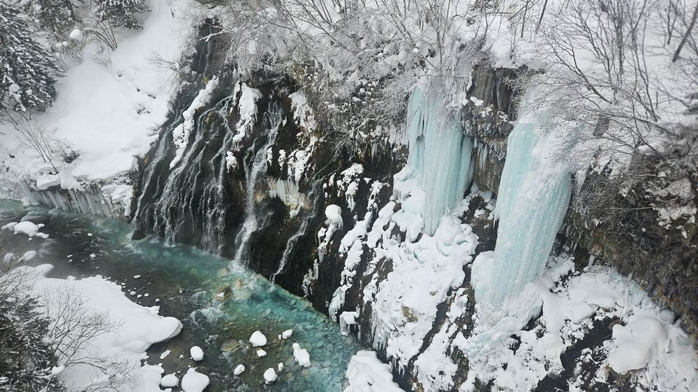
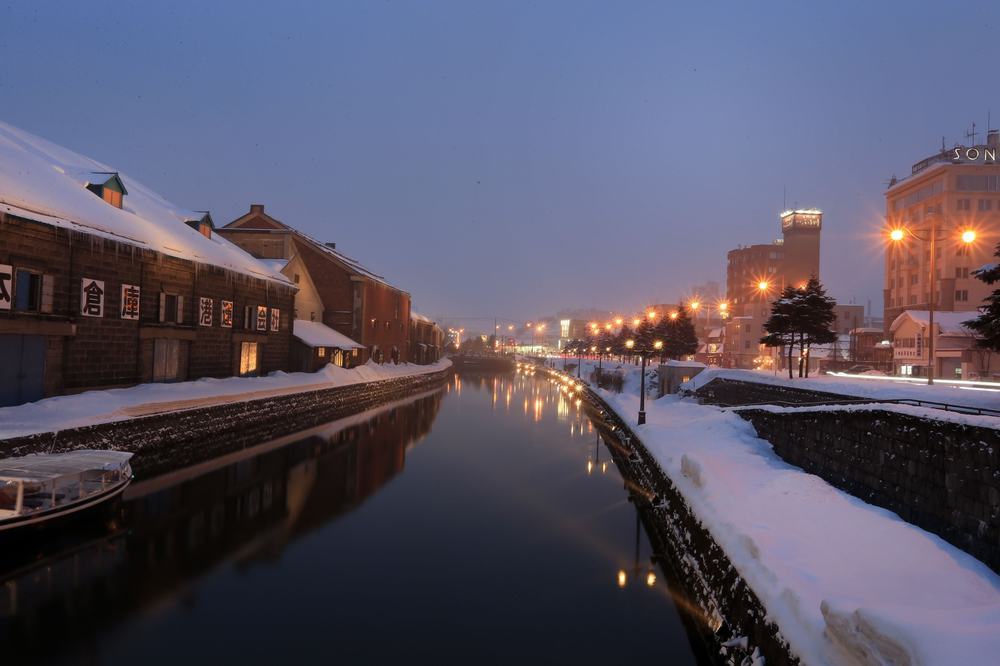
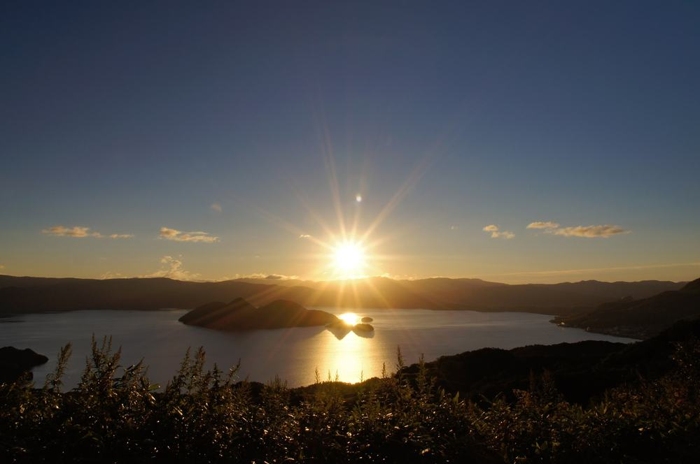

북해도 패키지 여행 3박 4일 교원투어 114만 9천원, 왕복 낮 비행기에 대게 뷔페 두 번
북해도 상품 중에 갈 때 12시 25분, 올 때 16시에 뜨는 왕복 낮 비행기는 생각보다 드묾.
직접 다녀온 후기가 아니라 교원투어 여행이지 일정표와 포함·불포함 원문을 한 줄씩 따져 정리한 글임.
결론 — 추천. 온천 호텔 두 밤에 대게 나오는 뷔페 두 번, 도야호 유람선·오타루·비에이까지 들었고 현지에서 더 내는 건 경비 4,000엔뿐. 다만 버스 3시간 가는 날이 힘드신 분은 맞지 않음.

오늘 기준 출발일별 요금 보기
https://naver.me/F3Eswtlq

| 항목 | 내용 |
|---|---|
| 가격 | 1인 1,149,000원 (성인 · 11월 출발 기준) · 2인 2,298,000원 |
| 여행사 | 교원투어 여행이지 |
| 항공 | 제주항공 직항 (7C1503·7C1504) · 인천 12:25 → 치토세 15:00 / 치토세 16:00 → 인천 19:25 |
| 숙소 | 도야 썬팔레스(온천) → 샤토레제 가토킹덤 삿포로(온천) → 프리미어 호텔 츠바키 삿포로 |
| 일정 | 3박 4일 · 버스 · 한국어 가이드 · 식사 9회 · 면세점 1회 · 가이드·기사 경비 4,000엔 별도 |
▶ 내 출발일 오늘 기준 요금 확인 (제휴 링크 · 예약 시 수수료를 받으며 가격은 같습니다)
▶ 11월 9일 기준 북해도 패키지 최저 114만 9천원부터 — 출발일별 값 한 화면에: 비교 페이지
| 번호 | 내용 | 한 줄 답 |
|---|---|---|
| 1 | 이 값에 들어 있는 것 | 관광 13곳 |
| 2 | 현장에서 더 낼 돈 | 2인 약 6만 9천원 |
| 3 | 일정과 체력 | 3일차 버스 약 6시간 |
| 4 | 자유여행으로 짜면 | 항공 빼고 약 82만 5천원 |
| 5 | 맞는 분 · 안 맞는 분 | 3 대 3 |
1. 이 값에 들어 있는 것
대게 나오는 뷔페가 두 번, 그중 한 번은 술까지 1시간 무제한이라 먹는 쪽이 이 상품의 힘임.

- 항공: 제주항공 인천–치토세 직항 왕복, 양쪽 낮 출발
- 숙소: 온천 호텔 2박 + 삿포로 시내 1박
- 식사: 9회 · 2일차 호텔 디너 뷔페에 대게 요리, 3일차 대게 뷔페+샤브샤브
- 관광: 도야호 유람선(약 50분) 포함 13곳, 입장료 포함
- 그 밖: 전용 버스 · 한국어 가이드 · 여행자보험(최대 1억원)
첫날 묵는 도야 썬팔레스는 방이 모두 도야 호수 쪽으로 나 있음. 침대 방이 될지 다다미 방이 될지는 배정 따라 다름.
점심은 임연수어 정식, 돈카츠 카레, 솥밥 정식이 돌아가며 나옴.
2. 현장에서 더 낼 돈
반드시 더 내는 건 가이드·기사 경비 1인 4,000엔 하나라, 두 분이면 약 6만 9천원 더 잡으면 됨.
| 항목 | 금액 | 필수/선택 | 비고 |
|---|---|---|---|
| 가이드·기사 경비 | 8,000엔 (약 6만 9천원) | 필수 | 1인 4,000엔 · 1엔 약 8.58원 |
| 선택관광 | 0원 | 없음 | 일정표에 선택관광 없음 |
| 시로이코이비토 파크 유료 구역 | 각자 | 해당 시 | 무료 구역만 포함 |
| 싱글룸 | 30만원 | 1인 여행 시 | 1인 전 일정 |
| 합계 (2인 필수분) | 약 6만 9천원 | 상품가 포함 총 약 236만 7천원 |
- 경비는 엔화 현금으로: 현지에서 가이드에게 냄
- 술값: 3일차 대게 뷔페는 1시간 무제한이라 따로 안 듦
3. 일정과 체력
버스가 제일 긴 날은 3일차 하나고 그 전날 밤이 온천 호텔이라 쉬고 출발하는 구조임.

| 일차 | 가는 곳 | 버스 | 걷기 | 점심 · 저녁 |
|---|---|---|---|---|
| DAY 1 | 치토세 15:00 도착 → 도야 썬팔레스 | 약 1시간 30분 | 적음 | 없음 · 호텔 뷔페 |
| DAY 2 | 도야호 유람선 → 쇼와신잔 → 후키다시 공원 → 오타루 → 삿포로 | 약 4시간 | 보통 | 임연수어 정식 · 호텔 뷔페(대게) |
| DAY 3 | 패치워크의 길 → 흰수염폭포 → 탁신관 → 시키사이노오카 → 삿포로 | 약 6시간 | 보통 | 현지식 · 대게 뷔페 |
| DAY 4 | 시계탑(차창) → 시로이코이비토 파크 → 오도리공원 → 치토세 16:00 | 약 1시간 30분 | 적음 | 현지식 · 없음 |
- 3일차: 삿포로–비에이 원문 기준 약 3시간, 왕복이면 하루 대부분이 차 안
- 길: 흰수염폭포 다리·비에이 언덕은 얼 수 있음 → 미끄럼 덜한 신발
- 밤: 3일차 저녁은 자유 시간이라 삿포로 일루미네이션을 보러 나갈 수 있음
이 상품 조건 한눈에 (출발일 달력·두 분 값·비슷한 상품과 비교)
https://pkg-lab.com/pkg/JHP006-04-7C1503-01/?utm_source=ghpages&utm_medium=post&utm_campaign=daily
같은 목적지 다른 여행사 패키지, 쇼핑·선택관광·가이드 경비까지 비교
https://pkg-lab.com/dest/SPK/m/2026-11/?utm_source=ghpages&utm_medium=post&utm_campaign=daily
4. 자유여행으로 짜면
항공 빼고만 세어도 1인 약 82만 5천원이라, 겨울 눈길 운전까지 생각하면 패키지 쪽이 편함.

| 항목 | 금액 | 근거 |
|---|---|---|
| 인천–치토세 왕복 항공 | 확인 못 함 | 2026-11-09 마이리얼트립 조회 실패 — 같은 날 값 미확인 |
| 호텔 3박 | 450,000원 | 온천 호텔 2박(석식 포함) + 시내 1박, 2인 1실 1인분 (추정) |
| 식사 (대게 뷔페 포함 5회) | 180,000원 | 호텔 조·석식 외 끼니 · 노미호다이 포함 (추정) |
| 렌터카·기름 3일 | 150,000원 | 2인 나눠 1인분 · 겨울 타이어 (추정) |
| 유람선·입장료 | 20,000원 | 도야호 유람선 등 (추정) |
| 공항 이동 | 10,000원 | 렌터카 반납 기준 (추정) |
| 여행자보험 · 유심 | 15,000원 | 4일 기준 (추정) |
| 가이드 | — | 자유여행은 없음 |
| 합계 (항공 제외) | 약 825,000원 |
여기에 왕복 항공이 붙으면 패키지 114만 9천원보다 싸지기 어려움.
도야에서 오타루, 삿포로에서 비에이까지 겨울 길을 직접 운전해야 한다는 게 제일 큰 차이임.
5. 맞는 분 · 안 맞는 분
걸리는 건 3일차 버스와 계절 쪽이고 값에 든 내용은 빠지는 데가 없음.

| 맞는 분 | 안 맞는 분 |
|---|---|
| 밤 비행기가 힘든 부모님 | 버스 3시간 가는 날이 힘드신 분 |
| 대게와 온천을 한 번에 원하는 분 | 눈 덮인 설경이 꼭 보고 싶은 분 |
| 북해도가 처음인 분 | 쇼핑센터 방문 자체가 싫으신 분 |
이 상품으로 다녀온 분들 후기를 보면 호텔 객실이 예상보다 좋았다는 말과 온천으로 피로를 풀었다는 말이 되풀이됨. 반대로 한겨울 눈 풍경을 원하면 1~2월 출발을 보라는 요령도 있었음.
안 맞는 쪽도 길은 있음. 11월 20일부터 삿포로 일루미네이션이 켜지고 쇼핑은 면세점 한 곳 1시간 안쪽이 전부.
자주 묻는 질문
Q. 북해도 패키지 가격은 이 상품이 얼마인가요?
A. 11월 출발 기준 1인 114만 9천원, 2인 229만 8천원. 출발일마다 값이 다르니 날짜별로 봐야 함.
Q. 북해도 패키지 여행 경비는 현지에서 얼마나 더 드나요?
A. 필수는 가이드·기사 경비 1인 4,000엔. 선택관광은 일정표에 없음. 혼자 가면 싱글룸 30만원 추가.
Q. 이 북해도 패키지는 쇼핑이 몇 번인가요?
A. 1번. 현지 면세점에 50분~1시간 들름. 사지 않아도 됨.
마무리
밤 비행기 없이 온천 두 밤과 대게 뷔페 두 번을 챙긴 북해도 상품.
3일차 버스만 괜찮으면 부모님 모시고 가기 무난한 동선임.
오늘 기준 출발일별 요금 보기
https://naver.me/F3Eswtlq
이 글에는 네이버 제휴 링크가 포함되어 있으며, 링크를 통해 예약하시면 일정 수수료를 받습니다. 가격은 동일합니다. 가격과 구성은 2026년 11월 9일 확인 기준이며 출발일에 따라 달라질 수 있습니다.
▶ 이 상품, 영상으로 보기 (유튜브)
▶ 북해도 패키지 오늘 값 나란히 비교
▶ 같은 목적지 다른 여행사 패키지, 쇼핑·선택관광·가이드 경비까지 비교: pkg-lab.com
사진 출처 (저작자 · 라이선스):
130922 Lake Toya Toyako Hokkaido Japan01s5 · 663highland — CC BY 2.5 (Wikimedia Commons) 원본

그 밖의 사진: Pexels
쇼츠·클립 영상과 사진:
【Sapporo White Illumination 《Merry Christmas 2020！ — Baoshin travel👘🧳 (YouTube, CC BY) 원본
Sapporo White Illumination 2016 (184517323) · Sorah Fukumori — CC BY 3.0 (Wikimedia Commons) 원본
.jpeg){kind=link}
【旅行】有珠山山頂駅洞爺湖展望台、有珠山ロープウェイ● 2016年7月23日 — I'm G (YouTube, CC BY) 원본
Tree of Ken and Mary - Biei - Hokkaido - Japan (48023422047) · Adam Jones from Kelowna, BC, Canada — CC BY-SA 2.0 (Wikimedia Commons) 원본
.jpg){kind=link}